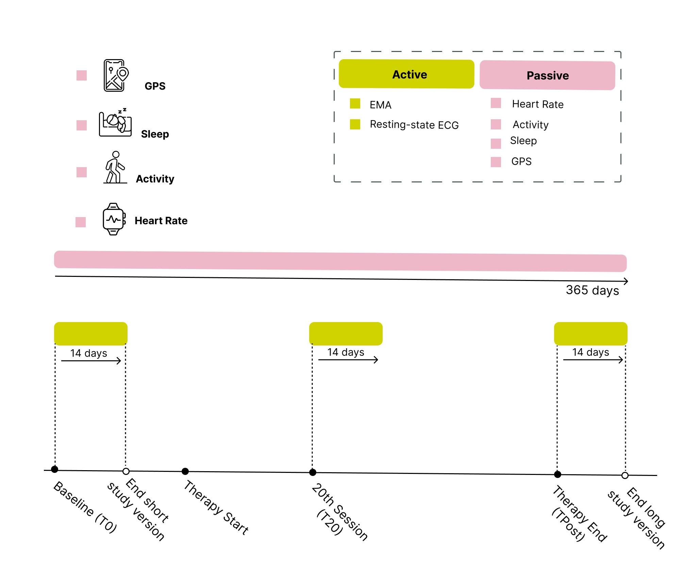

SP6/
|- processed/
|- passive/
|- epoch # not aggregated; most finegrained resolution
|- activity_epoch
|- heart_rate_epoch
|- ecg_epoch
|- gps_epoch
|- daily # daily aggregates
|- activity_daily
|- heart_rate_daily
|- ecg_daily
|- gps_daily
|- ema
|- ema_beep # not aggregated; most finegrained resolution
|- ema_daily # daily aggregate
|- ema_burst # burst aggregate
|- ema_meta # technical meta data
|- ecg
|- ecg_raw # raw data (sampling rate: 300 Hz; 9000 data points/30sec)
|- ecg_processed # processed, e.g. heart rate variability (hrv)
|- meta
|- monitoring # study monitoringPREACT-digital: Feature Database Documentation
Leona Hammelrath ![]()
Tessa Meyer
Introduction
Welcome to the documentation for the PREACT-digital study (study protocol).
Design
Longitudinal study design (PREACT-digital)

Glossary
beep =
measurement burst =
…
Data Structure
Folder Structure on High Performance Cluster (HPC) [wip]
EMA Data
This section outlines the EMA data sets (files) in detail and provides a thorough description of the eight EMA constructs and a item-level overview.
Data sets
Files:
ema_beep.pklema_meta.pkl
Details ema_content.pkl file:
Show details
| No. | Column name | Description | Data type | Scale level | Variable Level |
|---|---|---|---|---|---|
| 1 | id |
Unique identifier wearable and ema data within subproject 6 (SP6) | str |
||
| 2 | for_id |
Unique identifier across all PREACT subprojects and redcap | str |
||
| 3 | timestamp_item_completion |
Timestamp at which a single item was completed | datetime64 |
interval | |
| 4 | timestamp_beep_completion |
Timestamp at which a beep was completed | datetime64 |
interval | |
| 5 | timestamp_beep_expiration |
Timestamp at which the processing of the beep has expired (a beep expires after 30 min) | datetime64 |
interval | |
| 6 | measurment_burst |
Measurement burst describes the measurement point in the longitudinal study [Baseline (T0), after 20 therapy sessions (T20), or after therapy end respectively 365 days after therapy start (TPost)] | int |
ordinal | 0 = T0 1 = T20 2 = TPost |
| 7 | schedule_chronotype |
Depending on their individual sleep-wake rhythm participants can choose to receive beeps between 07:30 and 21:30 (lark) or 09:30 and 22:30 (owl) | int |
nominal | 24 = T0 lark 25 = T0 owl 33 = T20 lark 34 = T20 owl 38 = TPost lark 39 = TPost owl |
| 8 | response |
Chosen response by participant | int |
ordinal, nominal, binary | |
| 9 | item |
Question/item title | str |
||
| 10 | beep_per_person_id |
Unique beep identifier. Date and number of beep per ID | str |
||
| 11 | date |
Date on which the question/item was generated | datetime64 |
interval | |
| 12 | study_version |
Study version (short version: includes Baseline (T0), long version: includes Baseline (T0), T20 and TPost) | int |
nominal | 1= long 2 = short |
| 13 | ema_burst_start |
Absolute start EMA measurement burst (i.e. defined start according to study protocol) | datetime64 |
interval | |
| 14 | ema_burst_end |
Absolute end EMA measurement burst (i.e. defined end according to study protocol) | datetime64 |
interval | |
| 15 | season |
Describes the four seasons | int |
nominal | 1 = Spring 2 = Summer 3 = Fall 4 = Winter |
| 16 | time_of_day |
Time of day stratified into five categories (Early Morning = 00:00 - 00:00, Morning = 00:00 - 00:00, Afternoon = 00:00 - 00:00, Evening = 00:00 - 00:00, Night = 00:00 - 00:00) | int |
nominal | 1 = Early Morning 2 = Morning 3 = Afternoon 4 = Evening 5 = Night |
| 17 | weekend |
Does the timestamp in the time series describes a day at the weekend? | int |
nominal | 0 = No 1 = Yes |
| 18 | nr_beep_daily |
Number of questionnaire/beep within a day | int |
ordinal | 1 - 8 |
| 19 | n_beeps_completed |
Number of questionnaires/beeps completed by a person within a day | int |
ordinal | 1 - 9 |
| 20 | ema_relat_burst_start |
Relative start EMA measurement burst (i.e. actual start) | datetime64 |
interval | |
| 21 | ema_relat_burst_start |
Relative end EMA measurement burst (i.e. actual end) | datetime64 |
interval | |
| 22 | absolute_day_index |
Day since expected (absolute) start | int |
ratio | 1 - 16 |
| 23 | relative_day_index |
Day since actual (relative) start | int |
ratio | 1 - 16 |
Details ema_meta.pkl file:
Show details
| No. | Column name | Description | Data type | Scale level | Variable Level |
|---|---|---|---|---|---|
| 1 | id |
Unique identifier wearable and ema data within subproject 6 (SP6) | str |
||
| 2 | for_id |
Unique identifier across all PREACT subprojects and redcap | str |
||
| 3 | response_text |
Response displayed on device | str |
||
| 4 | item_code_map |
Numerical item code mapping | int |
[insert] | nominal |
| 5 | beep_type |
int |
nominal | ||
| 6 | beep_type_name |
Name of the questionnaire | str |
||
| 7 | item_order |
Order in which the items are displayed | int |
0 - 8 | |
| 8 | beep_num_run |
How many times a beep was opend before completion. Unique per answer. One beep can have multiple runs until completion | int |
Methods: Hierarchical Data Structure
- Level 1: Measurements (Observations)
- Each person records data 8x/day over 14 days
- This results in 112 measurements per wave (8x14)
- Level 2: Days
- Measurements (Level 1) are nested within days (Level 2)
- Each wave has 14 days
- Level 3: Waves (Measurement points)
- Each person goes thorugh three waves (long version)
- Days (Level 2) are nested within waves (Level 3)
- Level 4: Individuals (Participants)
- Waves (Level 3) are nested within participants (Level 4)
EMA constructs and item-level overview
The EMA measurement includes the following constructs:
- Affect
- Emotion regulation
- Situational context
- Significant events
- Social context
- Therapeutic agency
- Physical fitness
- ECG control
Affect
Description: At each beep, participants were asked about their current affective state
Construct: PANAS-X subscales Haney et al. (2023)
17 Items
Show Items
| Variable | Item | Scale | Scale Endpoints | Measurement Time |
|---|---|---|---|---|
| How … do you feel right now? | ||||
anxious |
anxious | 1-2-3-4-5-6-7 | not at all - very much | all beeps |
nervous |
nervous | 1-2-3-4-5-6-7 | not at all - very much | all beeps |
attentive |
attentive | 1-2-3-4-5-6-7 | not at all - very much | all beeps |
relaxed |
relaxed | 1-2-3-4-5-6-7 | not at all - very much | all beeps |
calm |
calm | 1-2-3-4-5-6-7 | not at all - very much | all beeps |
irritable |
irritable | 1-2-3-4-5-6-7 | not at all - very much | all beeps |
angry |
angry | 1-2-3-4-5-6-7 | not at all - very much | all beeps |
fatigue |
fatigue | 1-2-3-4-5-6-7 | not at all - very much | all beeps |
cheerful |
cheerful | 1-2-3-4-5-6-7 | not at all - very much | all beeps |
happy |
happy | 1-2-3-4-5-6-7 | not at all - very much | all beeps |
ashamed |
ashamed | 1-2-3-4-5-6-7 | not at all - very much | all beeps |
dissatisfied_myself |
dissatisfied with myself | 1-2-3-4-5-6-7 | not at all - very much | all beeps |
self_confident |
self-confident | 1-2-3-4-5-6-7 | not at all - very much | all beeps |
shy |
shy | 1-2-3-4-5-6-7 | not at all - very much | all beeps |
downcast |
downcast | 1-2-3-4-5-6-7 | not at all - very much | all beeps |
sad |
sad | 1-2-3-4-5-6-7 | not at all - very much | all beeps |
lonely |
lonely | 1-2-3-4-5-6-7 | not at all - very much | all beeps |
Emotion regulation
Description: At each beep, participants were asked to rate the intensity and controllability of their most negative thought since the last beep. Then, we assessed the use of different ER strategies since the last beep
Construct: RESS-EMA scale Medland et al. (2020)
6 Items (covering reappraisal, rumination, suppression, distraction, relaxation, acceptance)
Show Items
| Variable | Item | Scale | Scale Endpoints | Measurement Time |
|---|---|---|---|---|
| Think about the strongest negative feeling since the last beep [since waking up]. | ||||
er_intensity |
How intense was this feeling? | 1-2-3-4-5-6-7 (1 = neutral) |
not at all - very much | all beeps (except the first of the day) |
er_intensity_morning |
How intense was this feeling? | 1-2-3-4-5-6-7 (1 = neutral) |
not at all - very much | first beep of the day |
er_control |
How controllable was the situation that triggered this feeling? | 1-2-3-4-5-6-7 (4 = neutral) |
not at all - very much | all beeps (except the first of the day) |
er_control_morning |
How controllable was the situation that triggered this feeling? | 1-2-3-4-5-6-7 (4 = neutral) |
not at all - very much | first beep of the day |
| As a reaction to the negative feeling … | ||||
er_relaxation |
I tried to breathe deeply | 1-2-3-4-5-6-7 | not at all - very much | all beeps |
er_rumination |
I kept thinking about what was bothering me | 1-2-3-4-5-6-7 | not at all - very much | all beeps |
er_reappraisal |
I considered the situation from different perspectives | 1-2-3-4-5-6-7 | not at all - very much | all beeps |
er_distraction |
I tried to distract myself | 1-2-3-4-5-6-7 | not at all - very much | all beeps |
er_suppression |
I tried to hide my feelings | 1-2-3-4-5-6-7 | not at all - very much | all beeps |
er_acceptance |
I tried to accept the situation | 1-2-3-4-5-6-7 | not at all - very much | all beeps |
Situational Context
Description: At each beep, participants were asked to specify activities they had pursued in the preceding 2 hours from a given set of 9 common activities. Participants were able to select multiple options simultaneously. Subsequently, they were asked to evaluate how much they enjoyed the respective activities
Construct: Self-constructed, based on the DIAMONDS scale Rauthmann & Sherman (2016) and the WARN-D study protocol Fried et al. (2022), a similar longitudinal digital phenotyping study. We aimed to find a balance between sparsity of items and high degree of situational coverage.
2 Items
Show Items
| Variable | Item | Scale | Scale Endpoints | Measurement Time |
|---|---|---|---|---|
| How did you spent the time since the last beep [since waking up]? (Multiple answers possible) |
||||
situation_1 |
[ ] Work or study [ ] Housework or errands [ ] Caring for children/relatives [ ] Eating/drinking/personal hygiene [ ] On the move (e.g., in the subway) [ ] Smartphone/social media [ ] Leisure activity, rather passive (e.g., watching a movie, reading) [ ] Leisure activity, rather active (e.g., sports, outings) [ ] Something else |
all beeps (except the first of the day) | ||
situation_1_morning |
cf. above | first beep of the day | ||
situation_2 |
How much did you enjoy this activity? | -2, -1, 0, 1, 2 | not at all - very much | all beeps (except the first of the day) |
situation_2_morning |
cf. above | -2, -1, 0, 1, 2 | not at all - very much | first beep of the day |
Significant Events
Description: Participants were asked to think about the most important event since the last beep and how pleasant they perceived it
Construct: Self-constructed
1 Items
Show Items
| Variable | Item | Scale | Scale Endpoints | Measurement Time |
|---|---|---|---|---|
event_general |
Think of the most significant moment (situation/experience) since the last survey. How did you perceive it? | -2, -1, 0, 1, 2 | very unpleasant - very pleasant | all beeps (except the first of the day) |
event_general_morning |
Think of the most significant moment (situation/experience) since waking up. How did you perceive it? | -2, -1, 0, 1, 2 | very unpleasant - very pleasant | first beep of the day |
Therapeutic Agency (TA)
Description: Participants were asked about Therapeutic Agency (TA) in everyday life
Construct: Self-constructed based on the Therapeutic Agency Inventory (TAI) Huber et al. (2019). The original TAI contains 3 subscales, covering in-session activities, passivity towards the therapist and out-of-session activities. As we were interested in assessing therapeutic agency in everyday life, our TAI-EMA items are based on the “out-of-session activities” subscales and cover cognitive and behavioral aspects of TA
4 Items
Show Items
| Variable | Item | Scale | Scale Endpoints | Measurement Time |
|---|---|---|---|---|
| Prompted by my therapy today, I have … / Today I have … | ||||
ta_behavioral_1 |
… implemented ideas or tasks from therapy | 1-2-3-4-5-6-7 | not at all - very much | 1x/day, 8th beep |
ta_behavioral_2 |
… tried to think differently about things | 1-2-3-4-5-6-7 | not at all - very much | 1x/day, 8th beep |
ta_cognitive_1 |
… thought about something that was discussed in therapy | 1-2-3-4-5-6-7 | not at all - very much | 1x/day, 8th beep |
ta_cognitive_2 |
… done something to improve my situation | 1-2-3-4-5-6-7 | not at all - very much | 1x/day, 8th beep |
Physical Fitness
Description: Participants were asked how physically healthy they had felt today on the last beep of the day
Construct: Self-constructed
1 Item
Show Items
| Variable | Item | Scale | Scale Endpoints | Measurement Time |
|---|---|---|---|---|
physical_health |
How physically healthy did you feel today? | -2, -1, 0, 1, 2 | worse than usual / normal / better than usual | 1x/day, 8th beep |
ECG Control
Description: During measurement bursts, patients were asked twice per day to conduct a resting-state ECG on their Scanwatch. To control for potential confounders influencing the signal, we asked if they had consumed nicotine, caffeine or alcohol or had a heavy meal in the last 30 minutes
Construct: Self-constructed
1 Item
Show Items
| Variable | Item | Scale | Scale Endpoints | Measurement Time |
|---|---|---|---|---|
ecg_control |
Within the last 30 minutes, did you … - drink coffee or alcohol? - smoke? - eat a heavy meal? |
binary: yes/no |
2x/day, 1th and 5th beep |
Passive Sensor Data
This section outlines the passive sensor data set (files) in detail and provides a thorough description of the different wearable modalities (heartrate, acivity, sleep, GPS).
Data sets
Files:
passive_data.feather
Details passive_data.feather file:
Show details
| No. | Column name | Description | Data type | Scale level | Variable Level |
|---|---|---|---|---|---|
| 1 | id |
Unique identifier wearable and ema data within subproject 6 (SP6) | str |
||
| 2 | for_id |
Unique identifier across all PREACT subprojects and redcap | str |
||
| 3 | modality |
Type of modality | str |
categorical | |
| 4 | timestamp_start |
Timestamp at which the specific modality recording starts | datetime64 |
interval | |
| 5 | timestamp_end |
Timestamp at which the specific modality recording ends | datetime64 |
interval | |
| 6 | time_interval |
Duration recording | str |
||
| 7 | float value |
Variable level of the modality | float |
||
| 8 | boolean_value |
Variable level of the modality | boolean |
||
| 9 | start_date |
Start date of recording | datetime64 |
||
| 10 | start_hour |
Start hour of recording | datetime64 |
||
| 11 | study_version |
Study version (short version: includes Baseline (T0), long version: includes Baseline (T0), T20 and TPost) | int |
nominal | 1= long 2 = short |
Heartrate
Show details
| No. | Modality | Device | Data type | Scale level | Features |
|---|---|---|---|---|---|
| 1 | heartrate_PPG |
Withings Scanwatch | |||
| 2 | rmssd |
Withings Scanwatch |
Activity
Show details
| No. | Modality | Device | Data type | Scale level | Features |
|---|---|---|---|---|---|
| 1 | Steps |
Withings Scanwatch | |||
| 2 | ActivityType |
Withings Scanwatch | |||
| 3 | ActivityBinary |
Withings Scanwatch | |||
| 4 | RunBinary |
Withings Scanwatch | |||
| 5 | BikeBinary |
Withings Scanwatch | |||
| 6 | WalkBinary |
Withings Scanwatch | |||
| 7 | FloorsClimed |
Withings Scanwatch | |||
| 8 | ElevationGain |
Withings Scanwatch | |||
| 9 | ElevationGain |
Withings Scanwatch | |||
| 10 | ActiveBurnedCalories |
Withings Scanwatch | |||
| 11 | ActiveTypeDetail1 |
Withings Scanwatch | |||
| 12 | ActiveTypeDetail2 |
Withings Scanwatch |
Social context
Description: Participants were asked if they had social contacts since the last beep, how (online/ in person/ phone) and how agreeable the contact was.
Self-constructed
3 Items
Show Items
event_social_1yes/no
event_social_1_morningyes/no
event_social_2[ ] online
[ ] by phone
[ ] in person
event_social_3